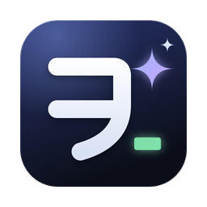

터미널, SSH, 파일, AI
한 화면에서 끝내세요
서버를 더블클릭하면 터미널과 파일 목록이 함께 열리고, 명령어가 기억나지 않으면 터미널 옆에서 말로 물어보면 됩니다. 쓰고 있는 Claude Code · Codex 구독을 그대로 연결해요.
macOS 기본 터미널 앱을 열고 붙여 넣으세요 · Apple silicon · Intel
$ curl -fsSL https://raw.githubusercontent.com/01-june-0/k-term-ai-releases/main/install.sh | bash같은 명령을 다시 실행하면 업데이트됩니다. 업데이트 전에 kTerm.AI를 종료하고, kTerm.AI 안의 터미널이 아닌 기본 터미널에서 실행하세요.
PowerShell을 열고 붙여 넣으세요 · Windows 10 · 11 (64비트)
> [Net.ServicePointManager]::SecurityProtocol = 'Tls12'; irm https://raw.githubusercontent.com/01-june-0/k-term-ai-releases/main/install.ps1 | iex설치 프로그램이 열리면 안내대로 진행하세요. "Windows의 PC 보호" 창이 뜨면 추가 정보 → 실행. 같은 명령으로 업데이트됩니다.
// 45초 시연
앱 네 개 대신 하나로
터미널, SSH, 파일 전송, AI 서비스를 오가던 일을 한 화면에서 해 봅니다. 화면의 서버와 데이터는 시연용입니다.
// 기능
매일 쓰는 작은 불편을 하나씩 지웠어요
SSH + SFTP
접속하면 파일도 바로 옆에
더블클릭으로 터미널과 파일 목록을 함께. 버튼 한 번으로 터미널이 있는 폴더로, 끌어다 놓으면 업로드.
AI · 명령 만들기
명령어가 기억 안 나면 말로
읽기 전용인지 먼저 알려 주고, 바꾸는 명령은 한 번 더 확인합니다. 실행 버튼은 내가 누릅니다.
AI · 보내기 전 미리 보기
비밀번호는 자동으로 가리고
AI에 무엇이 가는지 미리 보고 직접 고칠 수 있어요. AI는 도구를 잠근 채 답만 합니다.
브로드캐스트
서버 여러 대에 한 번에 입력
화면을 나눠 서버를 열고, 한 번 치면 전부에. 필요할 때만 켜고 끕니다.
커맨드 팔레트
서버 · 스니펫 · 동작을 한 검색창에
포트 포워딩, 점프 호스트, ~/.ssh/config 가져오기, 자동 재접속까지.
한글 · 스킨
한글 조합이 정확한 터미널
IME 조합 꼬임 없이. 스킨 8종, 자리 비울 때 Touch ID 앱 잠금(macOS).
둘러보기 · 터미널
둘러보기 · AI
// 설치 안내
처음 설치할 때 알아 둘 것
테스트 버전이라 Apple · Microsoft의 정식 서명이 아직 없습니다. 위의 설치 명령을 쓰면 가장 간단합니다.
macOS
- 터미널 앱(응용 프로그램 → 유틸리티)을 열고 설치 명령을 붙여 넣습니다.
- 설치가 끝나면 앱이 바로 열립니다. 위치:
응용 프로그램(쓸 수 없으면~/Applications) - 처음 실행할 때 키체인 접근을 물으면 항상 허용을 누르세요.
릴리스 페이지에서 zip을 직접 받아 풀면 "확인되지 않은 개발자" 경고로 열리지 않습니다. 설치 명령을 써 주세요.
Windows
- 시작 메뉴에서 PowerShell을 열고 설치 명령을 붙여 넣습니다.
- kTerm.AI 설치 프로그램이 열리면 안내대로 진행합니다. 관리자 권한은 필요 없어요.
- 설치가 끝나면 시작 메뉴에서 kTerm.AI를 엽니다.
"Windows의 PC 보호" 창이 뜨면 추가 정보 → 실행을 누르세요. 서명하지 않은 테스트 버전이라 나오는 안내입니다.
AI 기능을 쓰려면 무엇이 필요한가요?
Claude Code · Codex · Antigravity 중 쓰고 있는 CLI가 설치·로그인되어 있으면 그 구독을 그대로 씁니다. 구독 대신 API 키(Claude · GPT · Gemini)도 됩니다. 앱의 설정 → AI에 설치 방법 안내가 있어요.
AI가 제 서버에서 마음대로 명령을 실행하나요?
아니요. AI는 도구를 쓸 수 없게 잠근 채 답만 합니다. 명령은 터미널에 넣어 주기만 하고, 실행 버튼은 직접 누릅니다. 보내기 전에 무엇이 가는지 미리 보여 주고, 비밀번호 · API 키 · 토큰은 자동으로 가립니다.
업데이트는 어떻게 하나요?
kTerm.AI를 종료한 뒤 같은 설치 명령을 다시 실행하면 최신 버전으로 바뀝니다. 설정과 저장한 호스트는 그대로 남습니다. 종료하면 열려 있는 터미널 · SSH 세션은 닫힙니다.
삭제하려면?
- macOS: 응용 프로그램의 kTerm.AI를 휴지통으로. 설정까지 지우려면
~/Library/Application Support/ai.kterm.app,~/Library/WebKit/ai.kterm.app,~/Library/Caches/ai.kterm.app폴더도 지웁니다. 저장한 비밀번호·키는 키체인 접근 앱에서ai.kterm.app을 검색해 지웁니다. - Windows: 설정 → 앱 → kTerm.AI → 제거. 제거 화면에서 애플리케이션 데이터 삭제하기를 체크하면 설정도 함께 지워집니다. 저장한 비밀번호·키는 자격 증명 관리자 → Windows 자격 증명에서
ai.kterm.app항목을 지웁니다.
모바일 앱도 있나요?
아직 없습니다. Android · iOS 앱은 앞으로 만들 예정이에요.